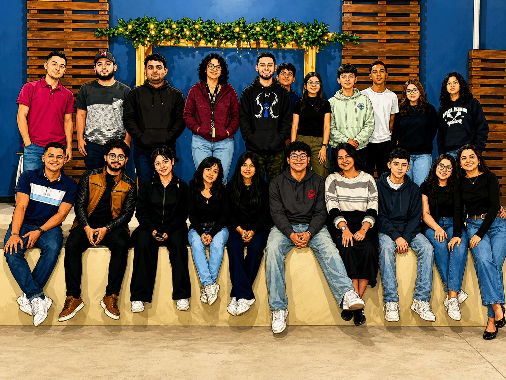
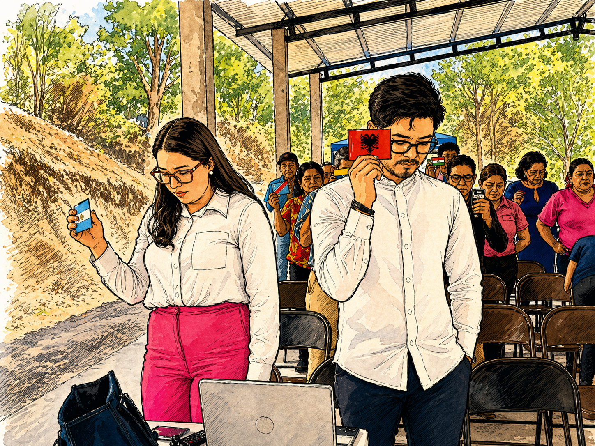
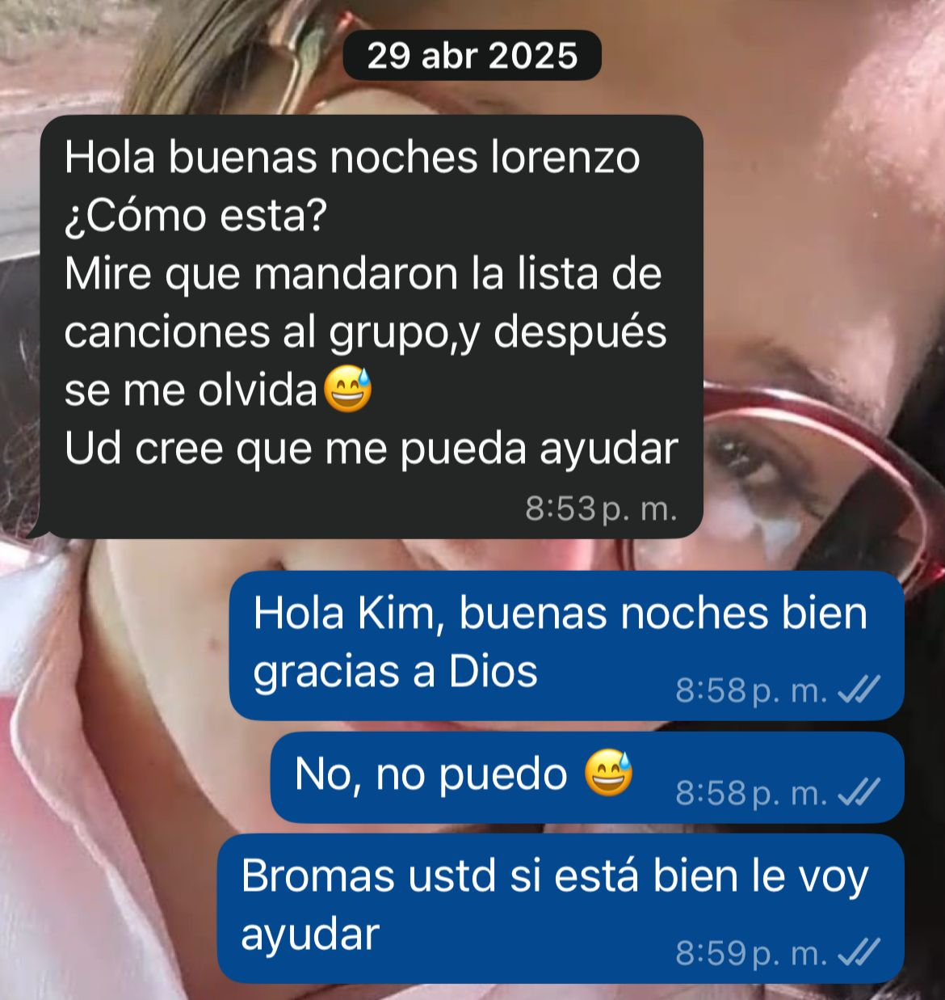
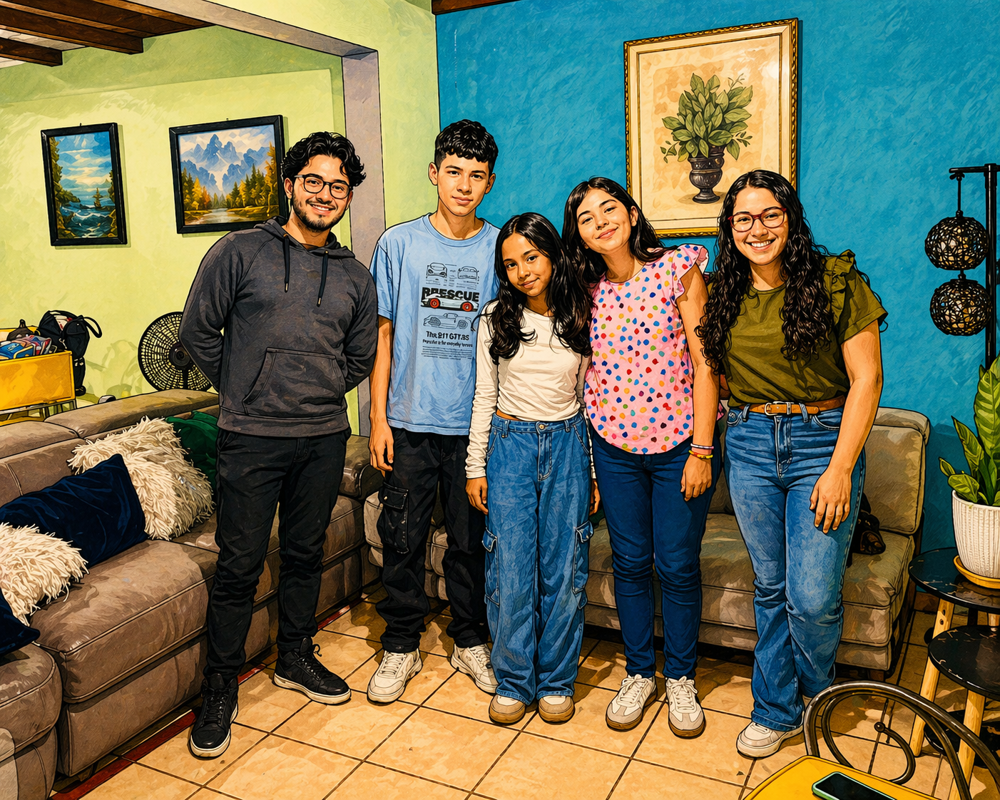
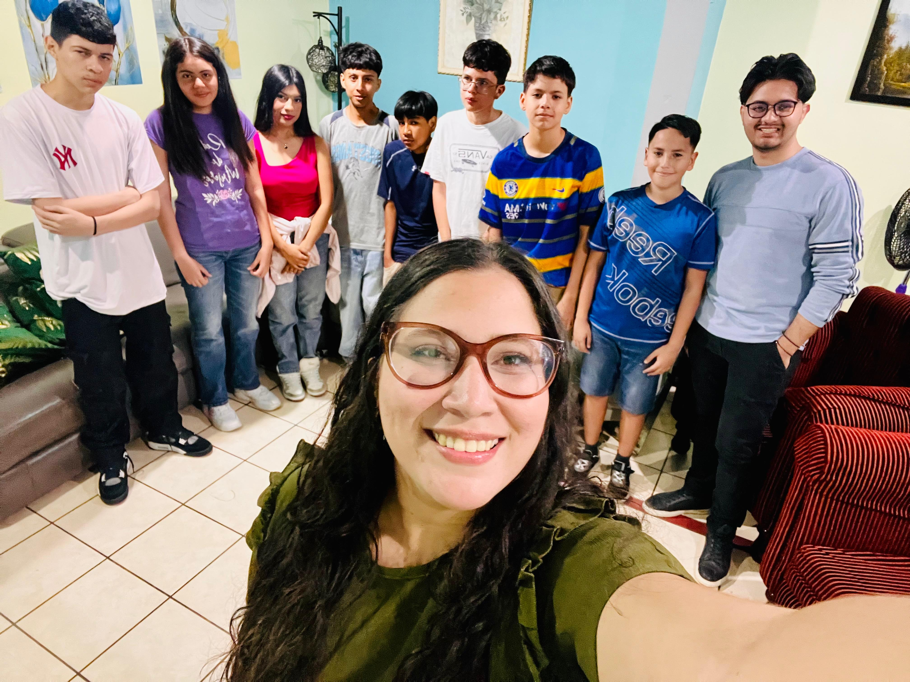
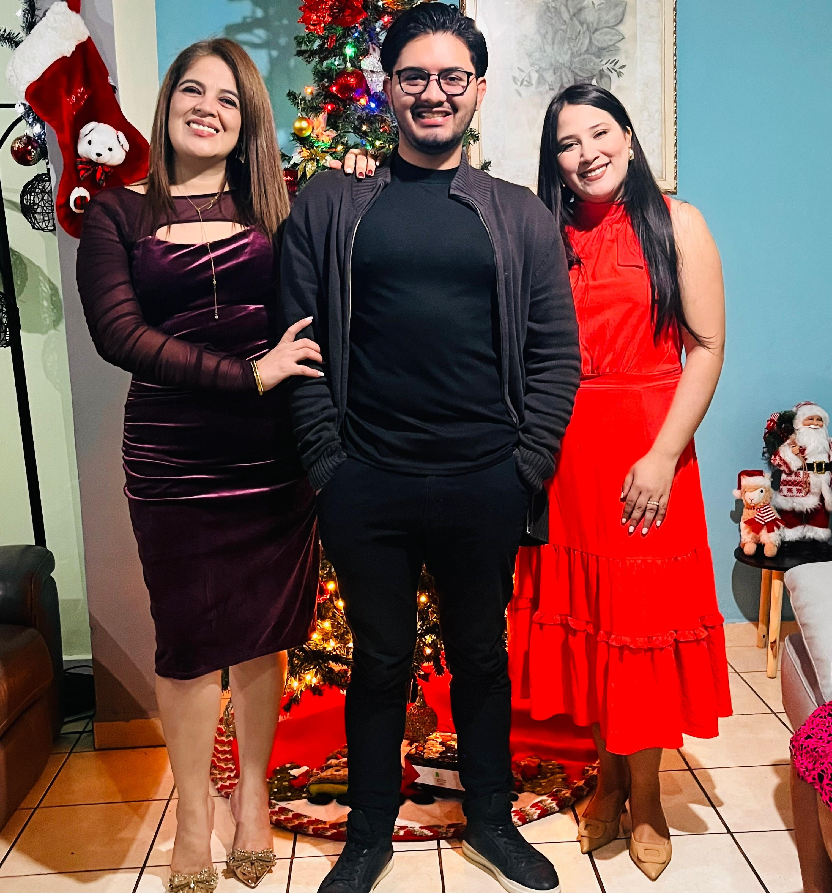
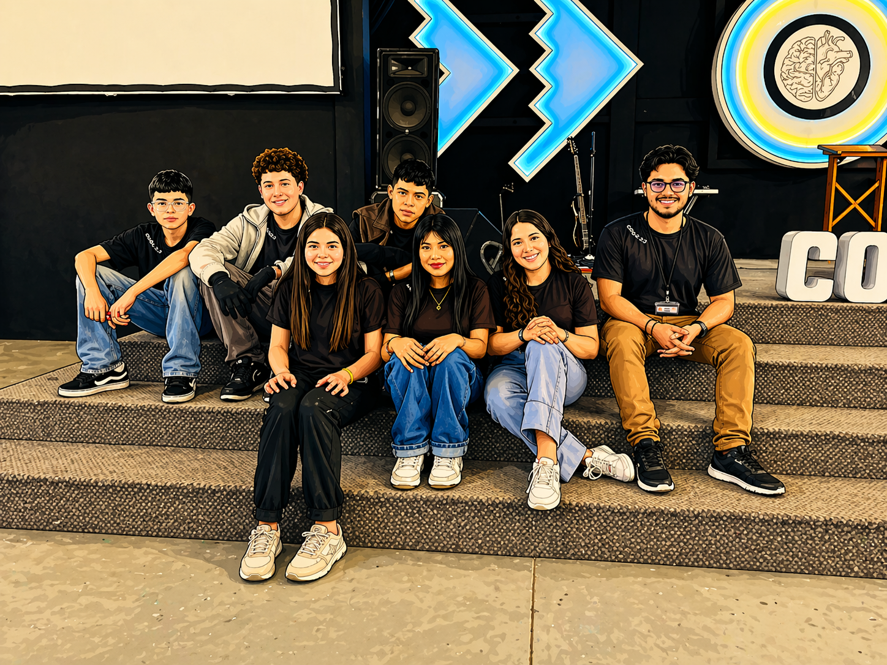

Febrero 2025 — Hoy
Todo inició en aquella reunión de jóvenes. No sé si fue casualidad o algo más grande, pero ese día, a través de la Lic. Yeny y después Rony, terminé llegando a la iglesia.
La reunión fue especial, pero lo que más recuerdo… fue conocerla por primera vez, aunque ya había escuchado de usted antes.
Fue un momento sencillo, sin mucho ruido, pero ahora que lo pienso, marcó algo importante.

Después cada quien siguió asistiendo normalmente a la iglesia. Usted siempre muy seria, llegaba y se iba.
En ese proceso, nuevamente Dios usó a las mismas personas para acercarme más, y fue cuando me propusieron unirme al ministerio de medios. Acepté… aunque siendo sincero, eso no era muy propio de mí.
Siempre he sido de perfil bajo, casi invisible. Meterme en algo así era raro, pero aun así dije que sí.

Ese día comenzamos a hablar, poco, pero fue el inicio. No soy mucho de conversar, así que todo iba tranquilo.
Ese mismo mes pasé por la pérdida de un familiar muy querido… y aunque no teníamos mucha cercanía, usted se tomó el tiempo de darme palabras de consuelo.
Hoy, viendo hacia atrás, noto cosas que en ese momento no vi.
Nuestras conversaciones eran básicas.
"Hola Lorenzo, ¿cómo está?"
"Mire que enviaron la letra de las canciones…"
Todo giraba alrededor del ministerio.
Y bueno… también recuerdo que se iba sin despedirse, qué barbaridad jajaj, pero eso lo vamos a dejar pasar.

Con el tiempo empezamos a hablar más allá del ministerio: trabajo, estudio… cosas normales.
En una de esas conversaciones usted dijo que estaba estresada y quería relajarse. Y salió el plan: después de la iglesia, ir al Juana Laínez.
Fuimos, almorzamos primero y luego subimos. El ambiente, el momento… todo se sintió bonito.
Nuestra segunda salida fue a Playmax. Fue un momento divertido.
Me acuerdo que tenía miedo en el tobogán jajaj, y también cuando me puse sus lentes… quedé ciego por un momento 😄
Después fuimos a Wendy's y pasamos por su mamá al trabajo.
Después me uní a apoyarle en la célula.
Sin darme cuenta, ya compartíamos más tiempo, más espacios… ya no era solo coincidencia.


A finales de año compartimos tiempo con su familia.
Ahí empecé a pensar diferente… a verla distinto. Ya no era solo una amistad normal.
Algo estaba creciendo.

Llegó mi cumpleaños. Y yo no soy alguien que celebre mucho eso.
Pero esta vez fue diferente… por usted.
Sus detalles, su atención… hicieron que ese día fuera especial. Y también fue parte de otro momento importante: el viaje a Santa Lucía.
Si se fija, ha estado presente en muchos momentos importantes de mi vida.
En el campamento pude compartir más tiempo con usted.
Yo ya venía orando, pidiendo una señal: que si usted era la persona para mí, sintiera paz a su lado.
Y eso ya lo venía sintiendo.
Ese día de los juegos… la miré diferente. Casi le digo todo ahí mismo, pero no era el momento.
También sentí que usted era más intencional conmigo… y yo también lo fui.

Cuando le dije lo que sentía por mensaje… no sé de dónde salió ese valor.
Y luego ir a hablar con el pastor, con su mamá… cosas que nunca imaginé hacer.
Ahí entendí que no era solo yo… algo más me estaba dando ese impulso.
El viaje a Trujillo fue otro momento más donde usted estuvo.
Y ahí confirmé algo claro: Usted no es cualquier persona en mi vida.
Ha estado en momentos importantes, en etapas clave… y eso no es casualidad.
También sé que no todo ha sido perfecto. Hemos tenido desacuerdos, y muchas veces yo he sido el causante.
Pero usted siempre ha buscado arreglar las cosas… y eso dice mucho.
Después de todo lo que hemos vivido…
Después del tiempo, los momentos, lo aprendido…
Hoy quiero preguntarle algo muy importante:
Gracias por dejarme ser parte de su historia.
Esto apenas comienza. ✨